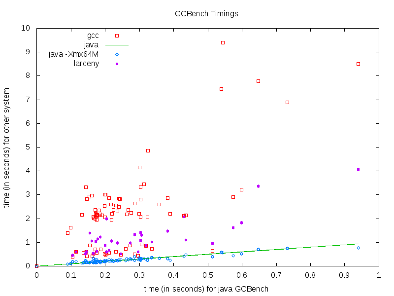

GCBench
We now turn to a micro-benchmark that was designed to be "more representative of real applications". The benchmark was written in Java by John Ellis and Pete Kovac, modified by Hans Boehm, and translated by Will Clinger into C, C++, and Scheme. Many implementors have used this benchmark to tune their garbage collectors and storage allocators.
In the spring 2017 edition of CS 5010, Problem Set 12 asked students to report results for this benchmark. Four of the timings they reported were outliers that would have had the effect of compressing the other data points into a small area of the plot, so those outliers have been omitted. All other timings are plotted.

Every student reported a slower time for C
(as compiled by gcc and using its default
implementation of malloc and free)
than for Oracle's JVM with its default garbage collector
and parameters.
Telling Java to use at most 64 megabytes of heap storage didn't have much effect on the timings.